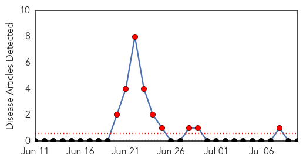
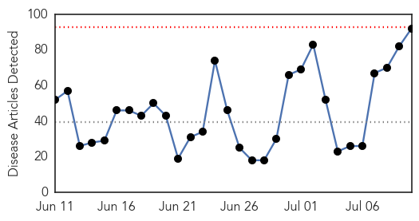
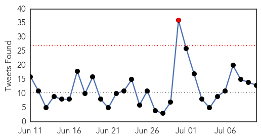
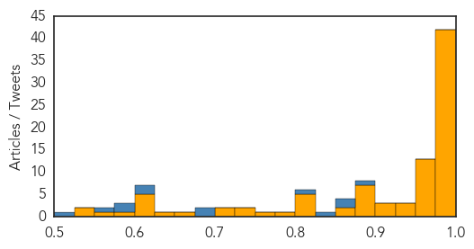

Bubonic Plague
30-Day Web Trend
9 alerts, 0 warnings

30-Day Twitter Trend
0 alerts, 0 warnings

Article Locations

Article Confidences

Top Articles:
-
No articles found for Jul 10, 2015
Top Tweets:
-
No tweets found for Jul 10, 2015
Ebola
30-Day Web Trend
0 alerts, 0 warnings

30-Day Twitter Trend
1 alerts, 0 warnings

Article Locations

Article Confidences
Top Articles:
- 1.000
- Surge of Ebola in Liberia May Be Linked to a Survivor
- 1.000
- Liberia confirms 2 new Ebola cases
- 1.000
- Liberia Announces Two New Confirmed Cases of Ebola Virus
- 1.000
- Tests show Ebola probably remained latent in Liberia
- 1.000
- Tests show Ebola probably remained latent in Liberia
- 1.000
- Tests show Ebola probably remained latent in Liberia
- 1.000
- Redemption of an Ebola-hit hospital in Monrovia
- 1.000
- Liberia update: New information from genetic sequencing - Liberia
- 1.000
- Ebola Strain in New Liberia Cases Same as Virus From Last Year's Outbreak
- 0.999
- Mugabe Calls for Inclusive, Complimentary Approach in Tackling Ebola
- 0.999
- Surge of Ebola in Liberia 'linked to a survivor'
- 0.999
- President leads African delegation in US
- 0.999
- Ebola research efforts shift to improving survivors' health
- 0.999
- Are we ready for Ebola?
- 0.999
- Liberia: Liberia update: New information from genetic sequencing
- 0.999
- Source of new Liberian Ebola outbreak a mystery
- 0.998
- Ebola virus needs $3.2 billion says United Nations conference,
- 0.998
- Ebola virus needs $3.2 billion says United Nations conference,
- 0.998
- WHO Says Ebola Recovery is Impossible Unless Resilient Health Systems are Rebuilt
- 0.998
- EU response to the Ebola outbreak in West Africa - Sierra Leone
- 0.998
- Liberia Records Two New Cases Of Ebola To Make Five
- 0.998
- Tests show Ebola in Liberia linked to virus found months ago - MyNorthwest
- 0.998
- Tanzanian Nurse In Self-Quarantine After Serving In Liberia
- 0.998
- EU response to the Ebola outbreak in West Africa
- 0.997
- UN meeting seeks aid for economies battered by 20,000-plus Ebola deaths
- 0.997
- Ebola-hit countries appeal for billions for recovery
- 0.997
- UN meeting seeks aid for economies battered by 20,000-plus Ebola deaths - Xinhua
- 0.996
- Ebola-hit countries seek billions for recovery at UN
- 0.996
- New Jump in Ebola Virus Case – Seven in Treatment Units
- 0.995
- African Nations Seek Billions for Ebola
- 0.995
- Ebola-hit countries seek billions for recovery
- 0.995
- Gene study points to Liberian source for new Ebola cluster
- 0.994
- Ebola-hit countries seek billions for recovery at UN
- 0.994
- WHO ‘unfit for health emergencies’ – BBC News
- 0.992
- President warns against Ebola complacency
- 0.992
- Sierra Leone extends Ebola curfews indefinitely
- 0.990
- President pays tribute to AU Ebola response
- 0.989
- Damning report says WHO unfit to handle emergencies like Ebola
- 0.989
- New Ebola Infections Brings Number of Liberia Cases to 5 - Liberia
- 0.987
- International Ebola Recovery Conference convenes
- 0.986
- World Bank warns of rising maternal deaths post-Ebola
- 0.977
- Cuba's Ebola Response Thrills UN Envoy
- 0.975
- Beware Of Ebola And Cholera Students Sensitized
- 0.975
- West African Health Organisation Day observed
- 0.975
- Nigeria not planning to ban flight from Liberia over Ebola threat
- 0.974
- Latest report on Global potential analysis of ebola drug and vaccines market is expected to reach $56 million by 2020 just published
- 0.974
- Ebola-hit countries unified in regional recovery plans, call for international support
- 0.973
- West African nations appealing for billions of dollars in Ebola relief
- 0.970
- UN special envoy commends Cuba's response to Ebola crisis
- 0.963
- Prime Minister congratulates Ebola heroes
Showing top 50 articles...
Top Tweets:
- 0.877
- Tests show Ebola in Liberia linked to virus found months ago - KSWO http://t.co/OZPTfjekGm ebola EVD
- 0.861
- Tests show Ebola in Liberia linked to virus found months ago - Bradenton Herald http://t.co/lcYCrUDbrZ ebola EVD
- 0.851
- Genetic sequence of Ebola virus from Liberia suggests the new cluster isn't a reintroduction: @WHO. Ebola never left http://t.co/TAdAERGy4p
- 0.841
- 2 new ebola cases being treated in monrovia liberia . EndEbolaNow KeepFighting WeCanFightThis
- 0.815
- Ebola in Liberia: @WHO says the virus from 1st case in new cluster looks like viruses from 6 months back. Missed chains of transmission?
- 0.688
- Ebola recovery goals focus on rebuilding health systems - CIDRAP http://t.co/QWnaN4LtUP ebola EVD
- 0.687
- Surge of Ebola in Liberia May Be Linked to a Survivor - New York Times http://t.co/jAHL6hSaqC ebola EVD
- 0.615
- Ebola research efforts shift to improving survivors' health - Baltimore Sun http://t.co/NupKj4Rnof ebola EVD
- 0.603
- The Same CDC with Serious Anthrax and Ebola Lab Mishaps Also Handles ... - Age of Autism http://t.co/JiveU7m87s ebola EVD
- 0.594
- RT: "The emergency is not over until we are down to zero Ebola cases" -- @StylianidesEU: http://t.co/UZ62OhsPYk Ebola…
- 0.575
- Community Knowledge Attitudes and Practices Regarding Ebola Virus Disease — Five Counties Liberia @cdcgov http://t.co/1tc6DLdce5
- 0.567
- RT: Ban Ki-moon demande de concrétiser les promesses de solidarité et de soutenir les pays touchés par l’Ebola EbolaRespo…
- 0.512
- Nigerian Doctors In America Warn Against Possible Resurfacing Of Ebola - CHANNELS TELEVISION http://t.co/3qC50jCPpq ebola EVD